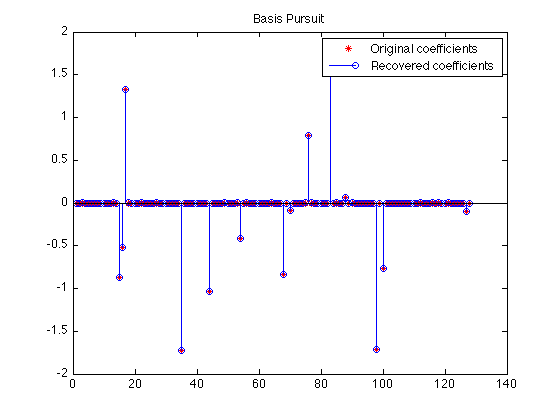
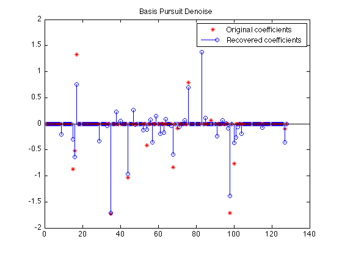
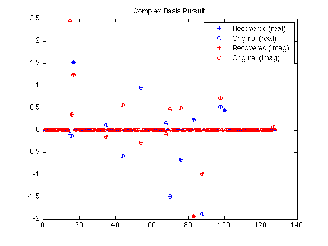

SPGL1: A Brief Tour
Michael P. Friedlander, June 2008
SPGL1 is a solver for one-norm regularized least-squares. It is suitable for problems that are large-scale and in the complex domain. This document gives a brief tour of SPGL1's main features.
Contents
Generate random data
The examples below are based on randomly generated data. We'll begin by creating a random m-by-n encoding matrix and a sparse solution vector:
rand('twister',0); randn('state',0); m = 50; n = 128; k = 14; % No. of rows (m), columns (n), and nonzeros (k) [A,Rtmp] = qr(randn(n,m),0); % Random encoding matrix with orthogonal rows A = A'; % ... A is m-by-n p = randperm(n); p = p(1:k); % Location of k nonzeros in x x0 = zeros(n,1); x0(p) = randn(k,1); % The k-sparse solution b = A*x0; % The right-hand side corresponding to x0
Basis pursuit
The basis pursuit (BP) problem
minimize ||x||_1 subject to Ax = b
often finds the sparsest solution to the linear system of equations Ax = b. The call to SPGL1 is straightforward:
opts = spgSetParms('verbosity',0); % Turn off the SPGL1 log output x = spg_bp(A, b, opts);
Let's verify that the true sparse solution was recovered correctly:
plot(x0,'r*'); hold on stem(x ,'b '); hold off legend('Original coefficients','Recovered coefficients'); title('Basis Pursuit');
As a final check, the residual should be nearly zero:
norm(b - A*x)
ans = 8.3531e-05
Basis pursuit denoise
If there was noise inherent in the signal that we measured, it would be better to instead solve the basis pursuit denoise (BPDN) problem
minimize ||x||_1 subject to ||Ax - b||_2 <= sigma,
which only approximately fits the equation Ax=b. In this experiment, we'll set sigma = 0.1:
b = A * x0 + randn(m,1) * 0.075; sigma = 0.1; % Desired ||Ax - b||_2 opts = spgSetParms('verbosity',0); x = spg_bpdn(A, b, sigma, opts);
We don't expect the recovery to be exact this time because of the noise:
plot(x0,'r*'); hold on stem(x ,'b '); hold off legend('Original coefficients','Recovered coefficients'); title('Basis Pursuit Denoise');
The corresponding residual should have a norm (nearly) equal to sigma (0.1):
norm(b - A*x)
ans =
0.0999
LASSO
The Lasso problem puts a constraint directly on the one-norm of the solution:
minimize ||Ax - b||_2 subject to ||x||_1 <= tau
Here, we'll recover a least-squares solution with a one-norm equal to pi -- an easily recognizable number! We'll turn on SPGL1's output so that we can see it's progress:
opts = spgSetParms('verbosity',1);
tau = pi;
x = spg_lasso(A, b, tau, opts);
================================================================================
SPGL1 v. 1017 (Mon, 16 Jun 2008)
================================================================================
No. rows : 50 No. columns : 128
Initial tau : 3.14e+00 Two-norm of b : 2.61e+00
Optimality tol : 1.00e-04 Target one-norm of x : 3.14e+00
Basis pursuit tol : 1.00e-06 Maximum iterations : 500
Iter Objective Relative Gap gNorm stepG nnzX nnzG
0 2.6116134e+00 8.8203906e-01 9.57e-01 0.0 0 0
1 1.7351041e+00 1.5596782e-01 5.16e-01 0.0 10 1
2 1.7035044e+00 3.5470990e-02 4.43e-01 0.0 6 1
3 1.6985890e+00 1.0356556e-02 4.16e-01 0.0 6 1
4 1.6984830e+00 1.3137969e-03 4.09e-01 0.0 6 3
5 1.6984820e+00 3.5582204e-04 4.09e-01 0.0 6 6
6 1.6984819e+00 2.5425067e-05 4.09e-01 0.0 6 6
EXIT -- Optimal solution found
Products with A : 7 Total time (secs) : 0.0
Products with A' : 7 Project time (secs) : 0.0
Newton iterations : 0 Mat-vec time (secs) : 0.0
Line search its : 0 Subspace iterations : 0
The one-norm of the solution:
norm(x,1)
ans =
3.1416
Complex variables
Many signal-processing problems involve complex-valued coefficients. In this example, we create a solution that is sparse in the Fourier domain. We simulate missing data by randomly restricting the rows of the Fourier operator. The resulting BP problem is
minimize ||z||_1 subject to R*F*z = R*b,
where R is a restriction operator and F is a Fourier operator. Keep in mind that z is a complex variable, and that
||z||_1 = sum_j ( sqrt( x_j^2 + y_j^2 ) ), where z_j = x_j + i*y_j.
We use the partial Fourier operator
z = partialFourier(idx,n,x,mode);
the index set idx
idx = randperm(n); idx = idx(1:m);
determines which rows of the Fourier operator are kept. We create an operator that conforms to SPGL1's requirements:
opA = @(x,mode) partialFourier(idx,n,x,mode); % This is now "A"
Create sparse coefficients and the right-hand side b:
z0 = zeros(n,1);
z0(p) = randn(k,1) + sqrt(-1) * randn(k,1);
Rb = opA(z0,1); % Rb = R*A*z0
Fire up SPG_BP in the usual way. Note that in this, case, the first argument is a function:
opts = spgSetParms('verbosity',0);
z = spg_bp(opA,Rb,opts);
Plot the recovered and original coefficients:
plot(1:n,real(z),'b+',1:n,real(z0),'bo', ... 1:n,imag(z),'r+',1:n,imag(z0),'ro'); legend('Recovered (real)', 'Original (real)', ... 'Recovered (imag)', 'Original (imag)'); title('Complex Basis Pursuit');
The Pareto curve
The Pareto curve traces the optimal tradeoff between the one-norm of the solution and the two-norm of the residual. We take advantage here of SPGL1's warm-start capability and sample the Pareto curve at a bunch of points.
We do this by solving a sequence of LASSO problems for increasing values of tau. Larger values of tau will yield smaller residuals. In fact, if phi(tau) is the norm of the residual corresponding to a given tau, then phi is a continuously differentiable function [BergFriedlander08].
Because here we wish to warm-start SPGL1, we need to use its expert interface, rather than the simpler interface available via SPG_LASSO.
b = A*x0; tau = linspace(0,1.01*norm(x0,1),50); % Values of tau at which to sample phi = zeros(size(tau)); % Preallocate the vector of residuals. x = zeros(n,1); % Initialize the solution. opts = spgSetParms('verbosity',0); for i=1:length(tau) [x,r] = spgl1(A,b,tau(i),[],x,opts); % Re-solve LASSO(tau) with a different tau. phi(i) = norm(r,2); % SPGL1's 2nd output arg is the residual. end
Plot the curve.
plot(tau,phi,'b.'); title('Pareto frontier'); xlabel('||x||_1'); ylabel('||Ax-b||_2');

Reference
[BergFriedlander] E. van den Berg and M. P. Friedlander, "Probing the Pareto frontier for basis pursuit solutions", January 2008 (revised May 2008). To appear in SIAM Journal on Scientific Computing.
% $Id: spgexamples.m 1077 2008-08-20 06:15:16Z ewout78 $